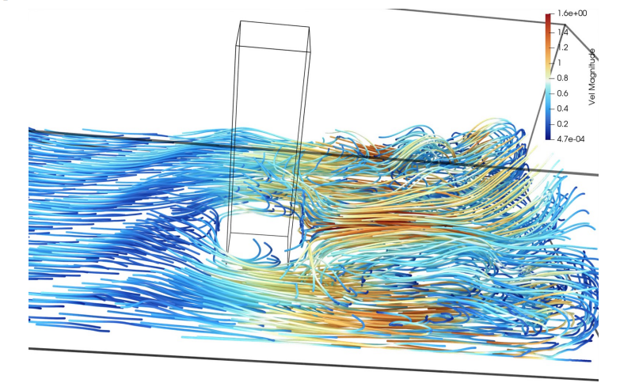
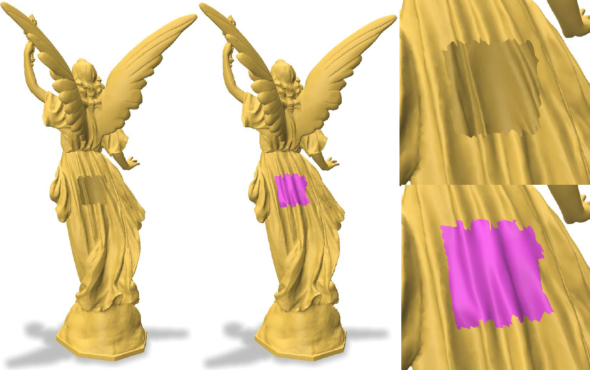
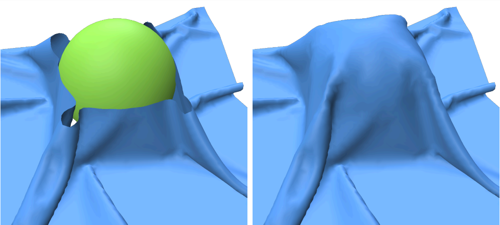
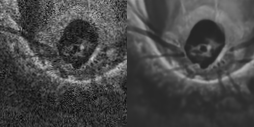
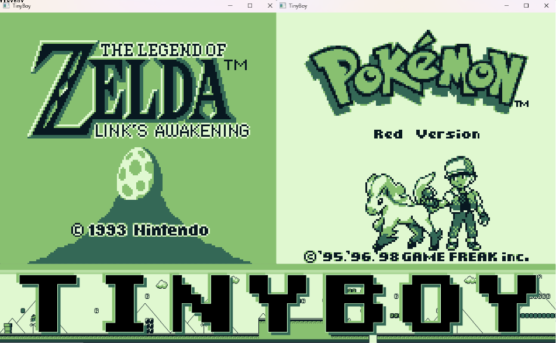

I currently work as an R&D Engineer at Kitware where I contribute to the development of VTK and ParaView, which are open-source scientific visualization softwares. My expertise is in 3D geometry processing (meshes and point clouds), image processing, computer vision and deep learning, with experience in both C++ and Python. I like to help bridge the gap between academic research and industrial software and applications.

Particles
SMI
SMI
OMIA